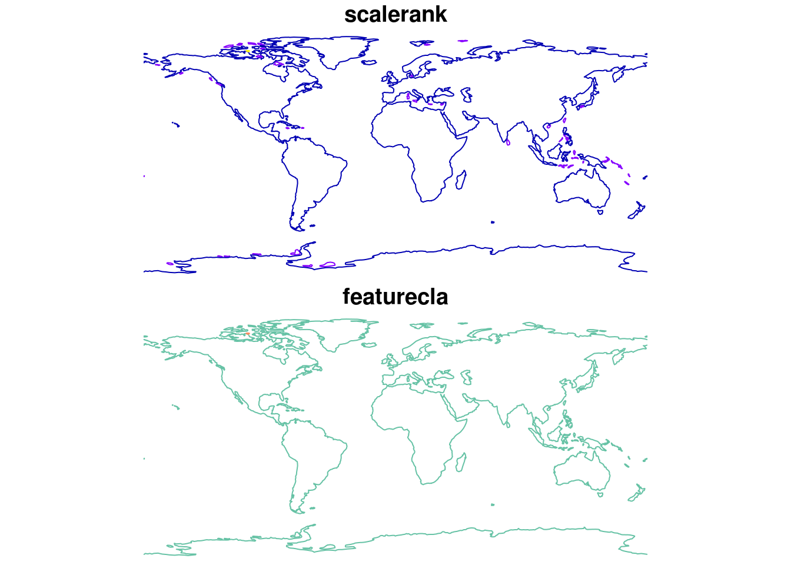
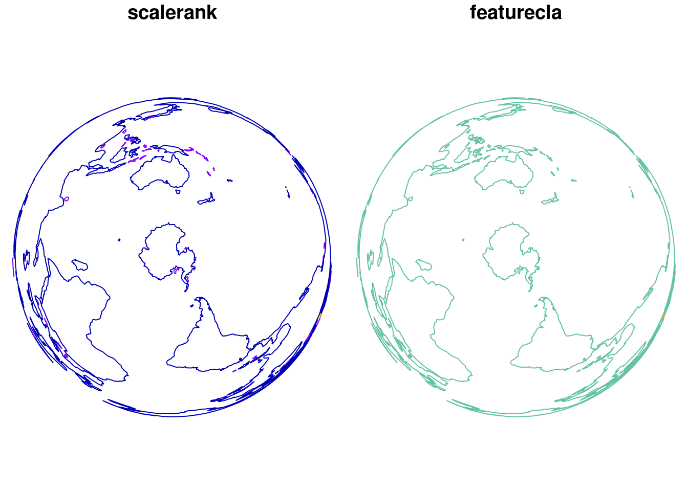

Map projections are a hot topic!
What do we need?
- a data manipulation and visualization environment
- coordinate transformation tools
- a coordinate reference system (‘crs’)
- data
Here they are:
## 1. R is a data manipulation and visualization environment
## R can do work with map projections using extension packages
## install.packages("sf")
## install.packages("rnaturalearth")
## 2. sf is a package for map data manipulation and transformation
library(sf)## Linking to GEOS 3.5.1, GDAL 2.1.2, proj.4 4.9.3## 3. a PROJ.4 'crs' string is one way to specifying the parameters for a projection
crs <- st_crs("+proj=laea +lat_0=-90 +lon_0=142 +datum=WGS84 +no_defs")
## 4. the rnaturalearth package includes a number of in-built map data sets
library(rnaturalearth)
coast <- ne_coastline(returnclass = "sf")This is a huge topic, and all of these four components are both crucially important to our quest of making a map. The ways in which these four components are provided and carried out however is completely open.
Make a map already
We already have R, we have tools for map data, we have a crs.
This is not what we want.
plot(coast)
st_crs(coast)## $epsg
## [1] 4326
##
## $proj4string
## [1] "+proj=longlat +datum=WGS84 +no_defs"
##
## attr(,"class")
## [1] "crs"This map layer is “unprojected”, it uses a “longitude-latitude” coordinate system. This is not what we want but it’s absolutely critical that we and (our software) know precisely what coordinate system the data is already in.
We can transform from one coordinate system to another use sf::st_transform.
pcoast <- st_transform(coast, crs)
plot(pcoast)
This is the part of the story where we have to know more details than we’d really like. Our data have metadata (a.k.a. attributes, fields, columns, variables) called ‘scalerank’ and ‘featurecla’. We have to drop these data for our simple plot mechanism to ignore them, which we can do permanently or on-the-fly with st_geometry.
plot(st_geometry(pcoast))
Share this post
Twitter
Google+
Facebook
Reddit
LinkedIn
StumbleUpon
Email